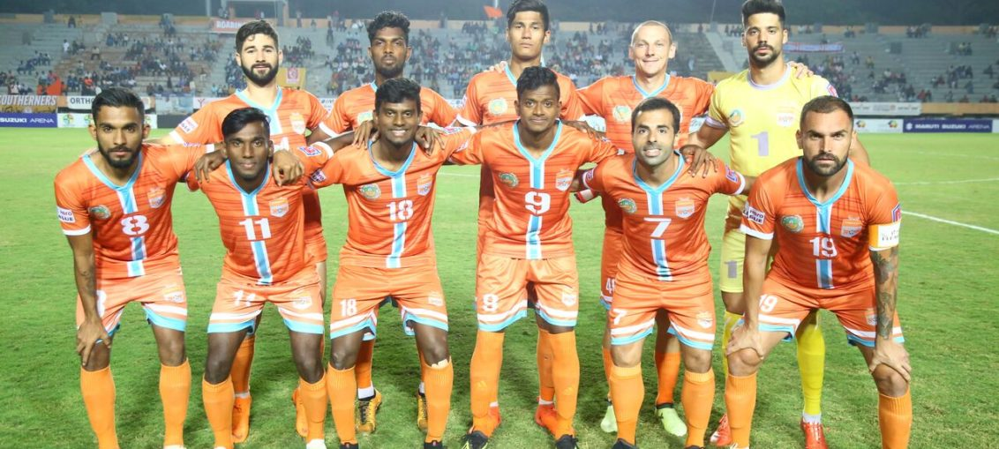

Posted at Date: March 09, 2019
Credit : রাইট স্পোর্টস ওয়েব ডেস্ক
আই লিগ অধরাই ইস্টবেঙ্গলের, চ্যাম্পিয়ন চেন্নাই

আই লিগ নাম যে ট্রফির, অধরাই থেকে গেল ইস্টবেঙ্গলের। জাতীয় লিগ জয়ের ক্ষেত্রে খরা এখন ১৫ বছরের! ২০১৮-১৯ আই লিগ, প্রত্যাশামতোই, জিতে নিল চেন্নাই সিটি এফসি, তৃতীয় মরসুমে। ঘরের মাঠে শেষ ম্যাচে মিনার্ভা পাঞ্জাব এফসি-কে ৩-১ হারিয়ে। ইস্টবেঙ্গল অ্যাওয়ে ম্যাচে গোকুলম কেরালা এফসি-র বিরুদ্ধে ২-১ জিতলেও শেষরক্ষা হয়নি। আই লিগ আগে কখনও যায়নি ভারতের সবচেয়ে দক্ষিণ প্রান্তে। শেষ পাঁচবারের হিসাব ধরলে তো ভারতের বিভিন্ন প্রান্তে নিয়ম করেই ঘুরছে ট্রফি। মোহনবাগান, বেঙ্গালুরু এফসি, আইজল এফসি, মিনার্ভা পাঞ্জাব এফসি-র পর এবার চেন্নাই সিটি এফসি। বাংলা, কর্ণাটক, মিজোরাম, পাঞ্জাবের পর তামিলনাড়ু্ – আই লিগ নামকরণ সার্থক!
বিরাট আশা ছিল না ইস্টবেঙ্গলের। চেন্নাই সিটি এফসি-র হাতে খেতাব তুলে দিয়েছিল ঘরের মাঠে আইজল এফসি-র বিরুদ্ধে জিততে না-পেরেই। শেষ ম্যাচের আগে তাই ব্যাটন ছিল না তাদের হাতে। নিজেরা জিতলেই হবে না, চেন্নাই সিটি এফসি-কে পয়েন্ট হারাতেই হবে – শর্ত ছিল। সচরাচর খেতাবি লড়াইয়ে এমন জায়গায় এগিয়ে-থাকা দল পিছিয়ে পড়ে না। কোয়েম্বাতোরে শুরুতে মিনার্ভা এগিয়ে গেলেও, দ্বিতীয়ার্ধে চেন্নাই সমতা ফেরানোর পর এগিয়ে যেতেও দেরি করেনি। চেন্নাইয়ের গৌরব বোরা নিজের দ্বিতীয় এবং দলের তৃতীয় গোল ৯৩ মিনিটে পেয়ে যাওয়ার পর, চ্যাম্পিয়ন চেন্নাই সিটি এফসি! সর্বোচ্চ গোলদাতার পুরস্কার যুগ্মভাবে চার্চিল ব্রাদার্সের উইলিস প্লাজা এবং চেন্নাইয়ের পেদ্রো মানঝির। দুজনের নামের পাশেই ২১ গোল। শুধু, প্লজার চার্চিল শেষ করল চতুর্থ স্থানে, ৩৪ পয়েন্টে। রেয়াল কাশ্মীরের খেলা বাকি এখনও মিনার্ভার বিরুদ্ধে। কিন্তু, ১৯ ম্যাচে ৩৬ পয়েন্ট পেয়ে যাওয়ায় তালিকায় তৃতীয় স্থান নিশ্চিত। ইস্টবেঙ্গলের ধারাবাহিকতার অভাব বলে যা তুলে ধরা হচ্ছে, ঠিক নয়। ২০ ম্যাচে চ্যাম্পিয়ন চেন্নাইয়ের পয়েন্ট ৪৩, ইস্টবেঙ্গলের ৪২। পার্থক্য এক পয়েন্টের। ১৩ ম্যাচ করে জিতেছে দুটি দলই। চেন্নাই চার ম্যাচ ড্র করেছে, ইস্টবেঙ্গল তিন ম্যাচে – এক পয়েন্টের পার্থক্য ওখানেই। ৪৮ গোল করলেও চেন্নাই রক্ষণ ২৮ গোল হজম করেছে, যেখানে ইস্টবেঙ্গল গোল খেয়েছে ২০টি। ধারাবাহিকতায় ‘বিরাট’ অভাব থাকলে যা সম্ভব হত না।
২০১৮-১৯ ইস্টবেঙ্গলের সমস্যা হয়ে দাঁড়ায় ঘরে এবং বাইরে চেন্নাইয়ের কাছে দুটি ম্যাচেই হার এবং ঘরের মাঠে শেষ দুটি ম্যাচে চার্চিল ব্রাদার্স ও আইজল এফসি-র বিরুদ্ধে পয়েন্ট হারানো। লিগের শুরু থেকেই চেন্নাই এগিয়ে ছিল দৌড়ে। তাদের বিদেশি এবং স্বদেশি ফুটবলারদের দলগত বোঝাপড়া, দেশি এবং বিদেশি ফুটবলারদের উৎকর্ষ, নিশ্চিতভাবেই সুবিধা করে দিয়েছিল। ইস্টবেঙ্গল ঘুরে দাঁড়িয়েছিল স্পেনীয় কোচ আলেখান্দ্রো মেনেন্দেজের প্রশিক্ষণে। ২০ ম্যাচের লিগে ৪-৫ ম্যচ খারাপ যেতেই পারে, যাবেও। আক্ষেপটা তাই থেকেই যাবে যে, আর একটি ম্যাচ বেশি জিততে পারলেই… ২০০৭-০৮ মরসুম থেকে জাতীয় লিগের নাম বদলে আই লিগ হয়েছিল। প্রথম ছয় মরসুমে আই লিগ বেরয়নি গোয়া থেকে। ডেম্পো তিনবার, চার্চিল দুবার এবং সালগাওকার একবার। বেঙ্গালুরু এফসি খেলতে এসেছিল ২০১৩-১৪ মরসুমে। অবস্থা পাল্টায়। দুবার খেতাব বেঙ্গালুরুতে, কিন্তু ২০১৭-১৮ মরসুমেই আইএসএল-এ চলে গিয়েছিল বেঙ্গালুরু। একই পথের পথিক হতে চলেছে ইস্টবেঙ্গলও, জানিয়ে দেওয়া হয়েছে ক্লাবের তরফে। অর্থাৎ, আই লিগ নামের ট্রফির রেপ্লিকা থাকল না ইস্টবেঙ্গল তাঁবুতে!
Top Stories

Calcutta Sports Journalists' Club requests the pleasure of your company at its annual awards functionMore...

Jasprit Bumrah has been declared fit and he will now be available for selection for India's third Test against England at Trent Bridge. More...

Ronaldo has increased Juventus' standing among Europe's elite. More...